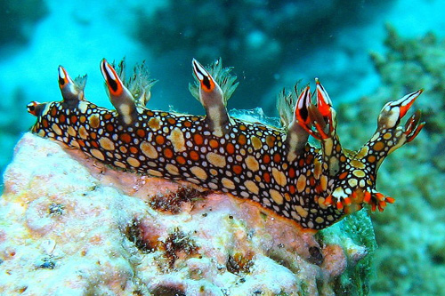
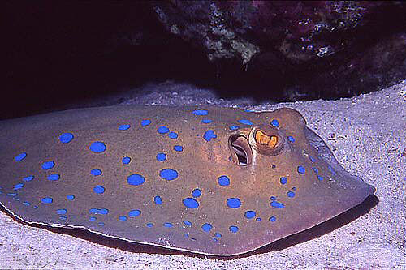

|
Powder-blue surgeon |
The powder blue surgeonfish (Acanthurus leucosternon)
is one of the most beautiful saltwater fish for the aquarium.
It is also commonly called the powder blue tang.
|
|

|
Bornella anguilla |
The Bornella anguilla, growing up to 80mm. It has a very
characteristic mosaic-like color pattern. Its name [anguilla = eel]
refers to its method of swimming.
|
|

|
Blue-spotted stingray |
The bluespotted stingray (Neotrygon kuhlii) or Kuhl's
stingray, is a species of stingray of the Dasyatidae family.
|

|
Dancing shrimp |
The dancing shrimp is a common name for any of the
species of shrimp belonging to the taxonomic family
Rhynchocinetidae. They are generally distinguished
from other shrimp by their movable rostrum (beak).
|